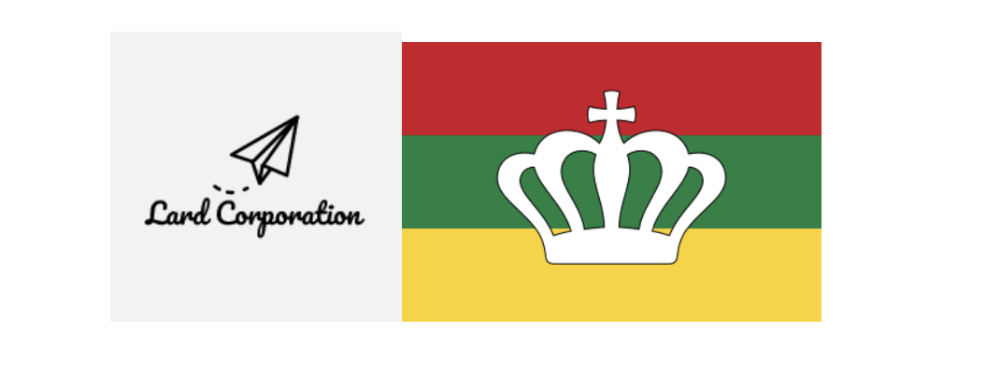

Close ×
Lardish Websites of interest
Lard Corporation's website (archived)
Lard News' Official Archive
Discontinued Lardish Guides
The Lardish National Electoral Institute's website (archived)
USFLR Official YouTube channel
Lard Lapudding's portfolio
Contact
Acknowledgements
History of the Lardish Republic

Home
Lard Corporation's old website
Lard Lapudding's portfolio
Contact
Basic course - 9. The Three Lardish War
1
2
3
4
5
6
7
8
9
10
11